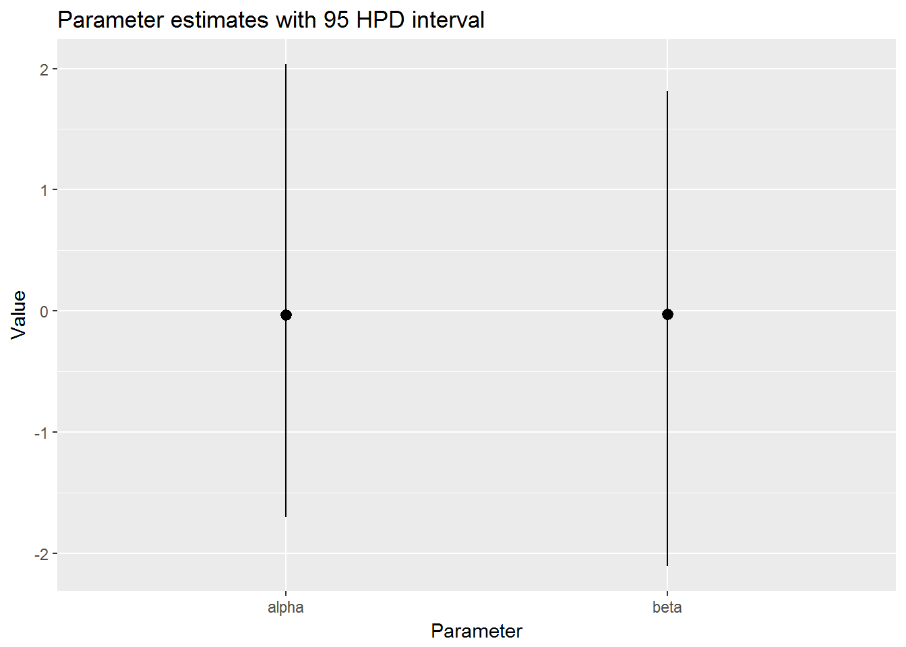

mcmc_ functionsSuppose you generate some MCMC samples of params
library(hayeslib)## Welcome to hayeslib.library(tidyverse) # hack for now## -- Attaching packages --------------------- tidyverse 1.2.1 --## v ggplot2 2.2.1 v purrr 0.2.4
## v tibble 1.3.4 v dplyr 0.7.4
## v tidyr 0.7.2 v stringr 1.2.0
## v readr 1.1.1 v forcats 0.2.0## Warning: package 'tidyr' was built under R version 3.4.2## Warning: package 'purrr' was built under R version 3.4.2## Warning: package 'dplyr' was built under R version 3.4.2## -- Conflicts ------------------------ tidyverse_conflicts() --
## x dplyr::combine() masks hayeslib::combine()
## x dplyr::filter() masks stats::filter()
## x dplyr::lag() masks stats::lag()library(coda)
num_samples <- 10^3
postr <- tibble(alpha = rnorm(num_samples),
beta = rnorm(num_samples))
postr %>%
mcmc_trace()Get it to a form that nice for easy mapping
postr %>%
t_mcmc()## # A tibble: 2 x 2
## param samples
## <chr> <list>
## 1 alpha <dbl [1,000]>
## 2 beta <dbl [1,000]>MCMC simple summary for plotting
postr %>%
t_mcmc() %>%
mcmc_stats()## # A tibble: 2 x 5
## param samples mean lo hi
## <chr> <list> <dbl> <dbl> <dbl>
## 1 alpha <dbl [1,000]> -0.03262095 -1.700069 2.036954
## 2 beta <dbl [1,000]> -0.02757512 -2.106014 1.813507Do the plotting
postr %>%
t_mcmc() %>%
mcmc_stats() %>%
mcmc_hpd_int()